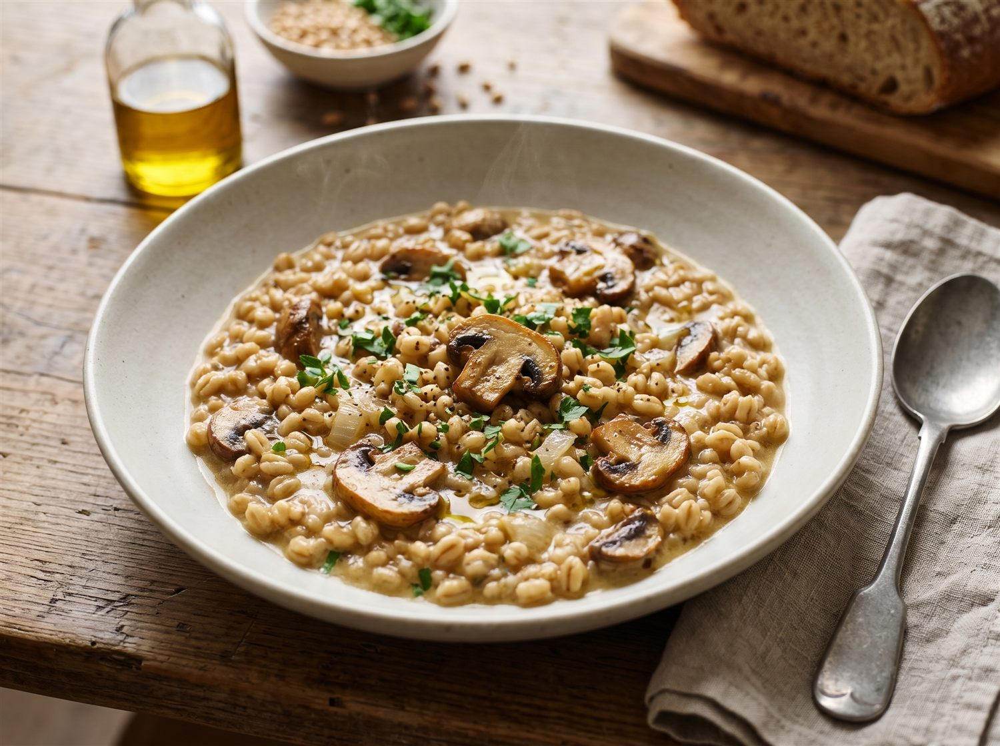

Faire dorer les champignons
Nettoie les champignons et coupe-les en tranches. Émince l’oignon. Dans une grande sauteuse, fais chauffer l’huile d’olive et cuis les champignons à feu moyen-vif jusqu’à ce qu’ils soient dorés. Réserve-les.
La recette maison
Du blé qui mijote doucement, des champignons bien dorés, puis le petit filet de colza à la fin.

On s’y met
Pas besoin de remuer sans arrêt : on ajoute le bouillon peu à peu et on reste dans les parages.
Nettoie les champignons et coupe-les en tranches. Émince l’oignon. Dans une grande sauteuse, fais chauffer l’huile d’olive et cuis les champignons à feu moyen-vif jusqu’à ce qu’ils soient dorés. Réserve-les.
Dans la même sauteuse, fais fondre l’oignon quelques minutes. Ajoute le blé perlé et mélange une minute pour enrober les grains.
Verse une louche de bouillon chaud. Remue de temps en temps et ajoute la suivante quand le liquide est presque absorbé. Continue environ 25 à 30 minutes, jusqu’à ce que le blé soit tendre mais encore légèrement ferme.
Remets les champignons dans la sauteuse. Incorpore la crème, poivre et sale si nécessaire. Coupe le feu puis ajoute l’huile de colza et le persil. Laisse reposer deux minutes avant de servir.
Verse le bouillon chaud progressivement : les grains cuisent de façon plus régulière et la texture reste fondante.
Remplace une partie des champignons par des poireaux émincés, revenus doucement avant le blé.